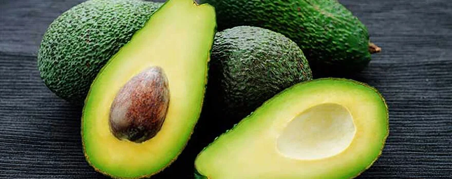

Aguacate

Es originaria del altiplano central y oriental de México. Su sabor, textura y propiedades nutricionales la han convertido en una de las frutas más apreciadas del mundo.
El género Persea cuenta con unas 90 especies en América, desde el centro de México hasta Centroamérica. Su centro de origen parece ser Mesoamérica y en particular los bosques nublados. El nombre de aguacate procede del náhuatl ahuacatl, que significa «testículos del árbol».
pagina principal